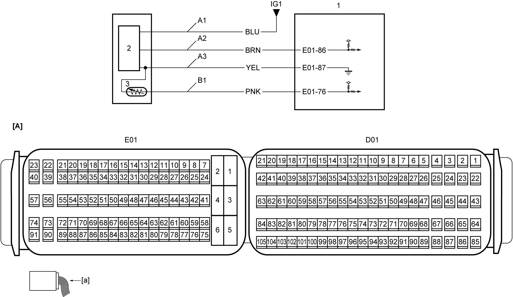

1A
| DTC P0101 |
DTC Detecting Condition and Trouble Area
| DTC detection condition | Trouble area |
|---|---|
|
P0101: Mass or Volume Air Flow “A” Circuit Range / Performance Any of the following conditions is met.
•Measured voltage of MAF sensor signal circuit is higher than specified value. (3 D/C detection logic)•Measured voltage of MAF sensor signal circuit is lower than specified value. |
•MAF sensor and/or its circuit
•Air intake circuit •ECM |
Circuit Diagram

 "Expand image")
| [A]: | ECM connector (View: [a]) | A3: | MAF sensor ground circuit | 2. | MAF sensor |
| A1: | MAF sensor power supply circuit | B1: | IAT sensor-1 signal circuit | 3. | IAT sensor-1 |
| A2: | MAF sensor signal circuit | 1. | ECM |
DTC Troubleshooting
| Step | Action | Yes | No |
|---|---|---|---|
| 1 |
Was “Engine and Emission Control System Check” performed?
|
Go to Step 2.
|
|
| 2 |
MAF sensor power supply circuit, signal circuit and ground circuit check
1)Check “A1”, “A2” and “A3” circuits according to Step 5 – 7 of MAF Sensor Check:D16AA.
Is check result OK?
|
Go to Step 3.
|
Repair or replace defective wire harness.
|
| 3 |
MAF sensor check
1)Check MAF sensor.
Is check result OK?
|
Go to Step 4.
|
Replace MAF sensor with IAT sensor-1.
|
| 4 |
Air intake / turbocharger circuit check
1)Check that air intake / turbocharger circuit is working properly.
Is check result OK?
|
Replace ECM and recheck DTC.
|
Repair or replace defective part(s).
|